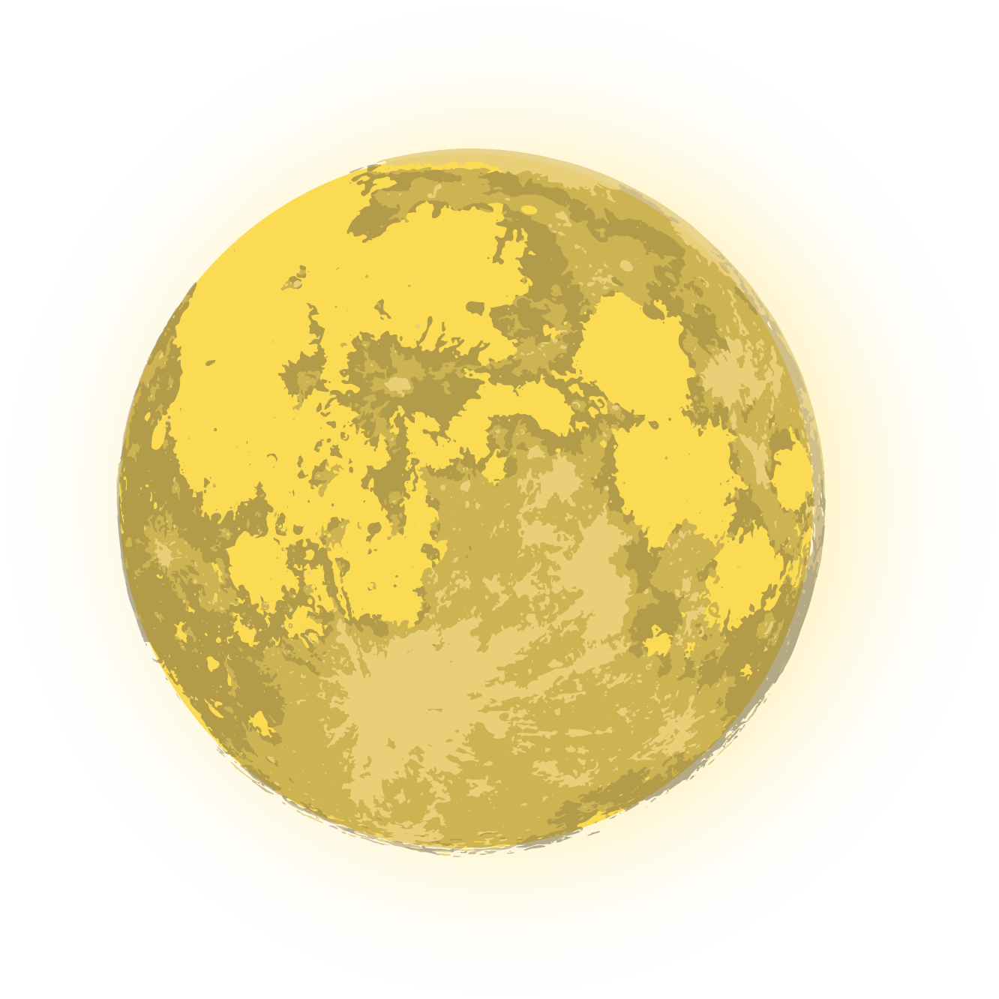
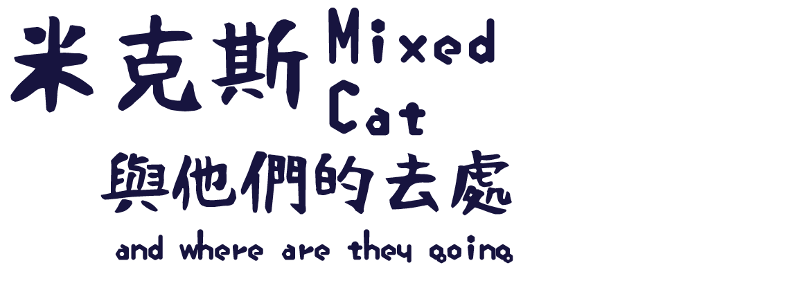

 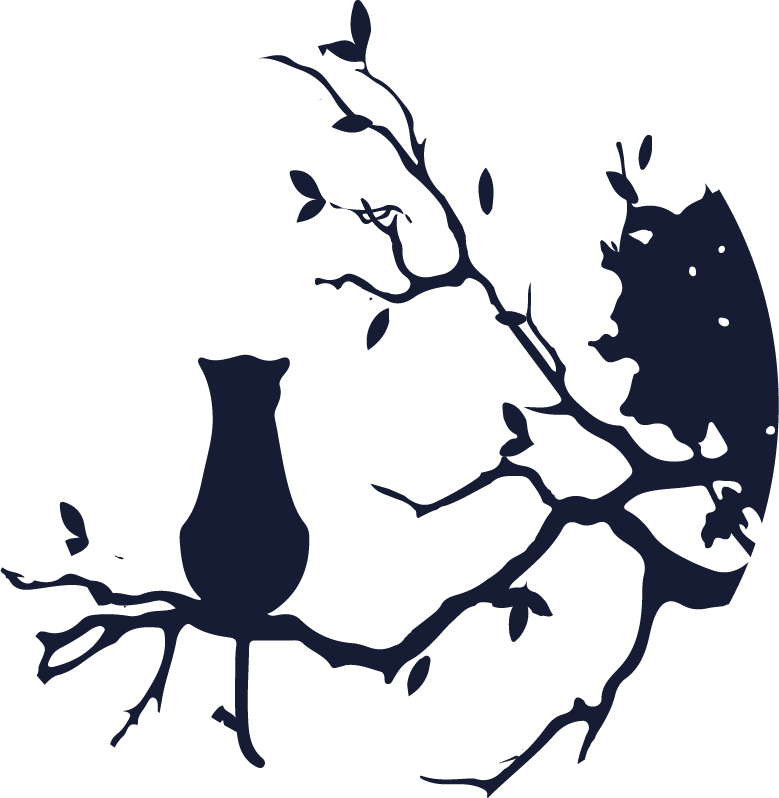
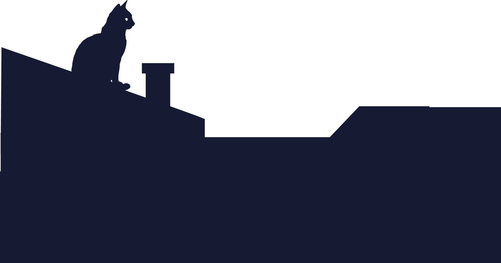
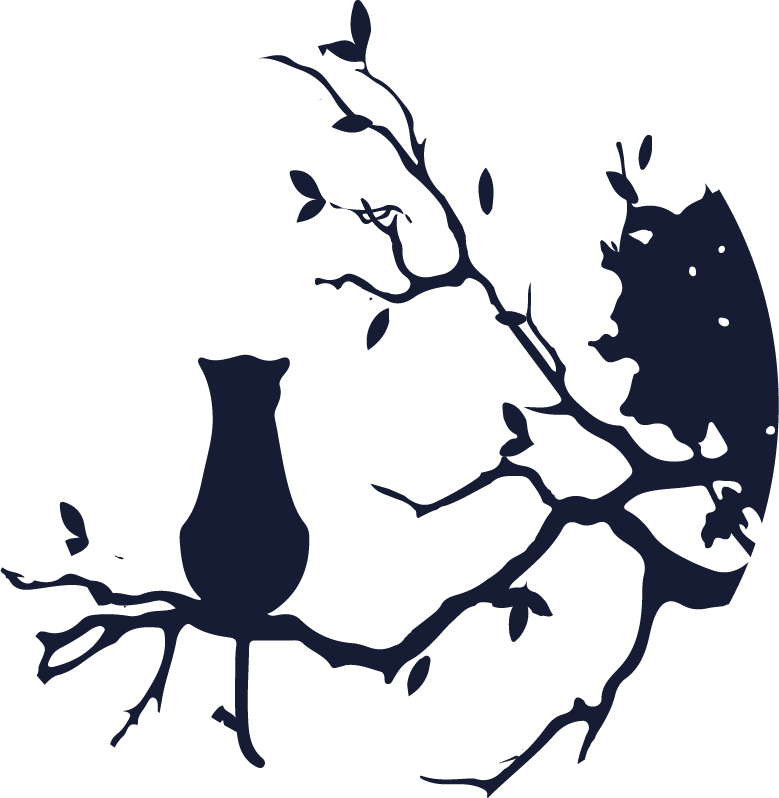
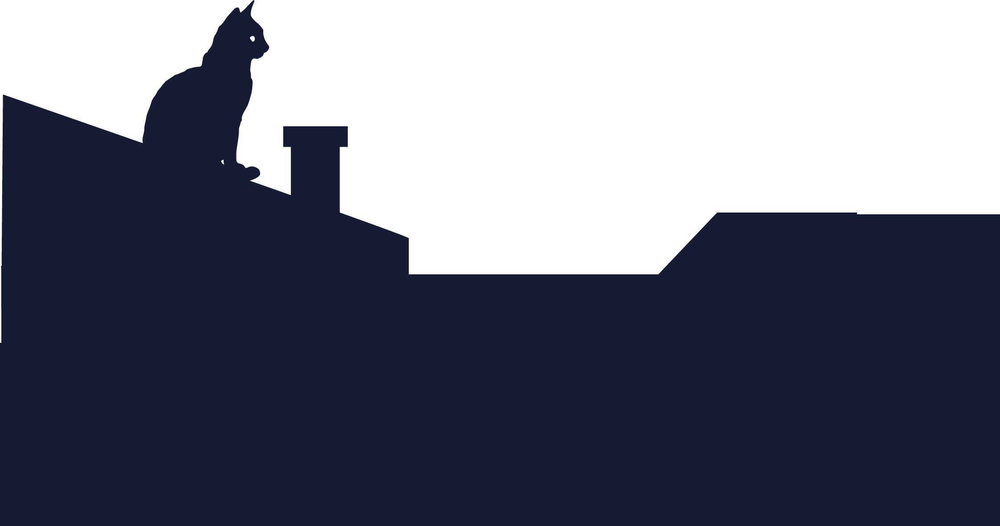
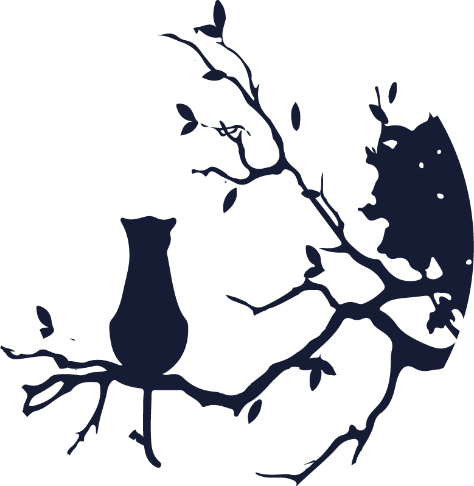
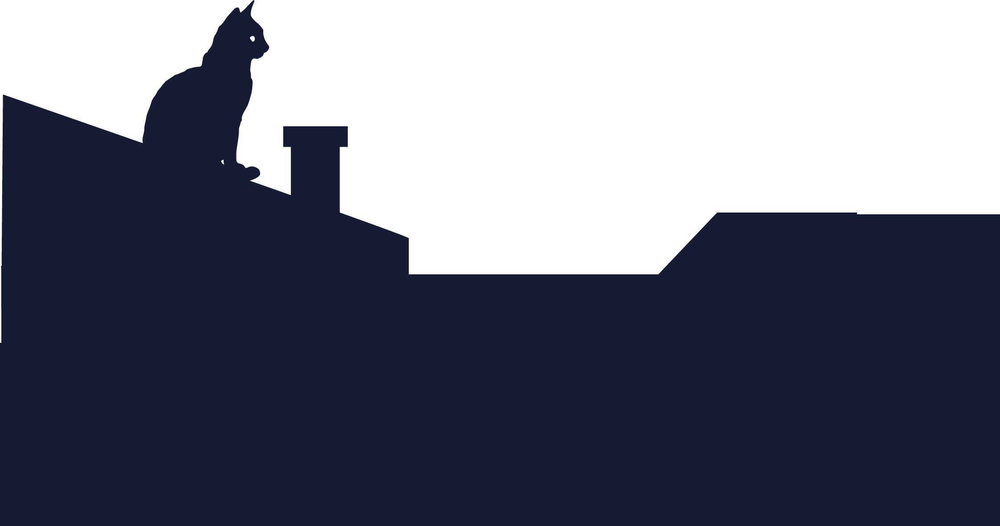
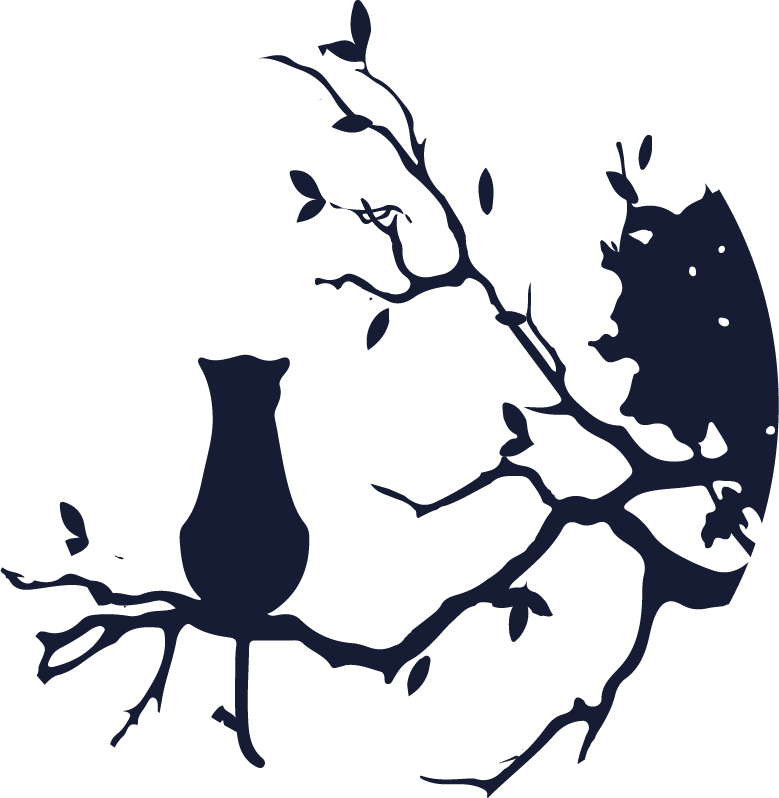
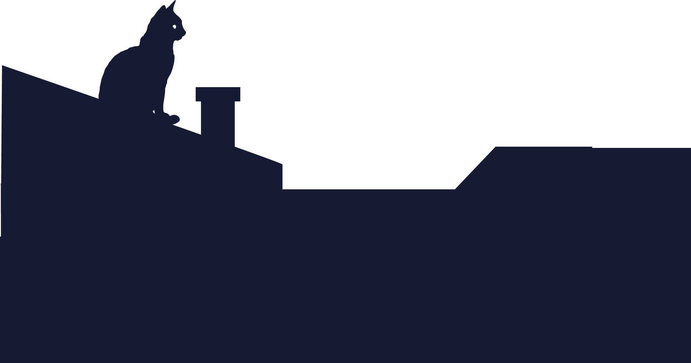

每天---
跟貓咪玩/清理貓砂/貓毛
處理貓咪弄壞、弄亂的東西
收拾對貓咪有害的東西(尖銳物品、電線、貓咪不能吃的食物等)
兩三週一次---
剪指甲/清潔貓咪的耳朵跟牙齒
不定期---
帶貓咪看醫生
第一年
飼料碗、貓砂盆、玩具：2000元
絕育手術+晶片+疫苗注射(三合一、五合一、白血病、狂犬病、 傳染性腹膜炎等)：5000元
之後固定開銷
每月貓食：1500元、貓砂：600元、滴劑(除蚤)：250元
每年預防針+檢查：3000元
生病診療費用：幾千元到萬元不等
老貓肝炎及定期醫療，每個月3-5000元
 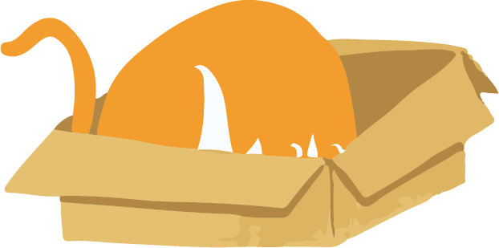
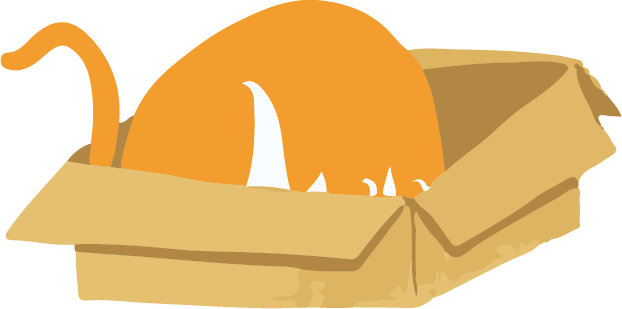
1. 剛到陌生環境的貓，通常都會因為沒有安全感而緊張、想要躲藏、甚至出現攻擊性的行為。
2. 從小空間開始熟悉
3. 可以固定一天2~3個時間餵食貓咪以培養感情，用罐頭最能打動貓咪的心。準備一些小玩具跟貓咪玩，或是單純的坐著看書、看電視陪貓咪都很好。
4. 當貓咪已經完全適應貓房和新主人後(可能只需一天，也可能需要好幾個星期)，打開房門，讓貓咪出去探索。但還是一樣的原則，讓貓咪自己決定什麼時候該走出去。
1. 在把貓咪帶回家之前，先買好貓咪的食物及用品。
2. 將一間小房間或是飼養鐵籠外面罩上布佈置成貓咪的房間，放好砂盆、食物碗、水碗、舒適的小貓床、貓抓板、玩具…等等；
3. 最好準備一個可以讓貓咪把自己”藏起來”的箱子或有屋頂的貓床。
4. 可能製造危險的物品都要收好，例如清潔劑、藥品、電線、火源、可能掉出房子的地方、或可能吞入的小東西。
5. 如果貓咪是住在貓籠的話，切記貓籠至少要有兩層，並且準備好睡覺的床鋪，每天最好還是要有出來透氣的時間，以免把貓咪給關到悶壞了。


1. 貓咪幼年期約為十二個月一般會由主人飼養的貓咪皆已經斷奶(正常幼貓1.5月大開始離乳，1.5~2月大斷奶)
2. 給予適合年齡以及身體狀況的貓飼料(有些廠牌也有特別為剛離乳小貓準備離乳貓飼料，可依貓年紀給予)
3. 幼貓一天餵食3~4餐，直到6個月大以後一天改餵食2~3餐。(貓咪建議一天還是至少兩餐)
1. 貓咪屬於狩獵動物的關係幾乎沒有體味，
2. 大多數貓咪並不需要太常洗澡，最頻繁不要多於一周一次，過於頻繁的清洗易導致皮膚問題。洗劑請使用貓用洗劑，請勿使用人類洗劑。
3. 為貓咪洗澡時記得順便將肛門腺輕柔的擠乾淨，減少肛門腺炎發生的機率。
4. 另外清洗時小心耳朵進水，澡洗完後最好使用清耳劑清潔耳朵並帶出裡面水分。
5. 貓的清潔比洗澡更重要的是幫貓梳毛


1. 貓一般都有較強的忍受病痛的能力，貓患病後常躲藏在幽靜、暗淡的地方休息。
2. 貓患病後大多數都要影響到消化功能，常表現出食欲不振，甚至不吃不喝、嘔吐、腹瀉等癥狀。若不及時地給予易消化、營養豐富、美味可口的食物，特別是充足的飲水，可導致貓機體出現一系列功能紊亂、酸中毒、心力衰竭等現象，甚至死亡。
3. 腎貓後期需要自行皮下輸液，須做好心理準備